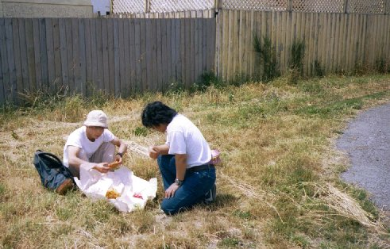

ニュージーランド １ | ２０００年１２／２６〜２００１年１／５ |
|  | １２／２６ 成田発ソウル経由ニュージーランド行き（大韓航空）に乗るため、一路車で成田に向かう。予定通り成田に着いたのだが、大韓の人は突然謝り始めた。 「あなた達が乗る飛行機が悪天候で遅れていまして、ソウルからの乗り換え便に間に合いません〜<(_ _)>」 ま、待ってくれ。それは、・・・・えっ どうする?! 「お客様の責任では有りませんので、当社の方でニュージーランド航空を取りましたのでそちらに乗り換えて頂きたいのですが。出発が３時間ほど遅くなります。」 大韓からＮＺ航空。お〜〜 いいじゃないか。しかも、直通便！到着時間も４時間ほど早く着く！！ おまけに昼食券１０００円分まで頂く。 そんな、調子でスタートしたＮＺ旅行。出発から期待させてくれます。(*^。^*) ＮＺ航空では、酒を飲み食い物を食い映画を観て、乾燥する畿内に耐えながら眠っている内に １２／２７ ＮＺ、クライストチャーチに着きました。 早く着いたので、レンターカーの予約時間と違っていたが、何とか車を借り、市内に繰り出す。 |
知らない道、分からないルール。それでも違う国に来たって感じがする。 そして、ＮＺ初の飯。私にとっては（べっしー）海外初の飯が、フィッシュ＆チップスとなる。 （写真上） １０＄セットと有ったので、それを注文したのだが・・・・・脂ぎったポテトと、厚い衣に包まれた魚や肉類。３人で食べたが食いきれないほど。しかも胃にもたれる。 あ〜外国の飯ってこんなのか・・・・しかも、道ばたで・・・・楽しすぎる！（思考も日本を離れた瞬間 ｂｙ キッカー) とりあえず、この日はそんなに動けないので、市内観光へ。私の趣味とも言える、航空博物館へＧＯ！（写真右） いろんな飛行機が有りました。だが、そんな話は興味がない人にはおもしろくないので、割愛させて頂きます。 しかし、この日は暑かった。もちろん南半球は今は夏。だから暑いと思うのだが、やっぱり暑い。裸足で歩いている人もいるし。 |  |
 | 今日の宿は、クライストチャーチのYMCA。ＹMCAって言っても綺麗な部屋で（３人部屋）、綺麗なベット。これで一人１５００円くらい。 とりあえず夕食を食べるため、繁華街へと歩く。そのとき撮ったモノが（左写真）これ。 クライストチャーチと言えば大聖堂。（・・・ホントに？） でも、クライストチャーチは本当に古い町並みが多く、石造りの建物が至る所に建っていて、しかも現在も使用しているってんだからすごい。街を歩いていてもゴミなんて落ちていない。みんな気をつけているんだなと、感心するばかりです。 夕食をバーというか、カフェみたいなところでとる。ここのピザは美味しかった。なお、キッカー（西ヶ谷）は、昼のフィッシュ＆チップスを人一倍食べたせいか、胃がもたれて食べませんでした。(クライマーにとっては毒だと思いながらも、・・・・ｂｙ キッカー) コメント：キッカー（西ヶ谷） 「イギリス以外で最もイギリスらしい」と言われる街。なるほど、ゴシック様式の建物がたくさん残っているからなんだな。東京ドーム３８個入ってしまう公園ハグレーパークは一周ジョギングで４０分もかかった。やはり、ちょーＢＩＧ。んんーん、でもフィッシュ＆チップスはそんなＢＩＧでなくていいよ。 |
１２／２８ 我々は町中のカフェで朝食をとり、町はずれにある山にゴンドラで登る。第一のアクティビティ「自転車でダウンヒル」である。 まず、ゴンドラ受付で料金を払い、そのままゴンドラに乗って山頂へ。山頂付近の道路に自転車を乗せた車が待っている。そこで、マウンテンバイクとヘルメット（ＮＺでは必ずヘルメットを着用しなければならない）を借りて、山を下る。 これが結構なスピードが出る。途中住宅地も抜けるのだが、みんなこの急坂に面して建っている。長崎の坂より急なのは言うまでも無い。しかし、気持ちいい！ そして午後になってから、今日の宿泊地マウント・クックへと向かう。マウントクックとは山の名前でもあり、地名でもある。(映画「バーティカルリミット」の撮影舞台) 車でクライストチャーチから４時間ぐらい３００㎞ぐらいだと思った。ほとんど直線の道路をひたすら走る。 右の写真は途中の湖、テカポ。（これで夕方６時）わかりずらいが、この湖はまさに青。その美しさは今まで見たどの湖よりも美しく、何か入っているんじゃないかと思うほど。実際、この上流は氷河があり、その中に含まれる石灰（だったかな？）だかが、溶けてこんな青色になるんだそうな。 (ただの美しさじゃなくて、深みのある美しさ・・・人間で言うと誰なんだろ？ 色もたぶん・・・花崗岩だから、多少は石灰質も含まれているかもしれないけど、水晶の方が全然多く含まれている。単に花崗岩の削れた粒子が水に混合しているからだと思うよ。 ｂｙ キッカー) |  Ｌａｋｅ Ｔｅｋａｐｏ （左からべっしー、キッカー、シュガー） |